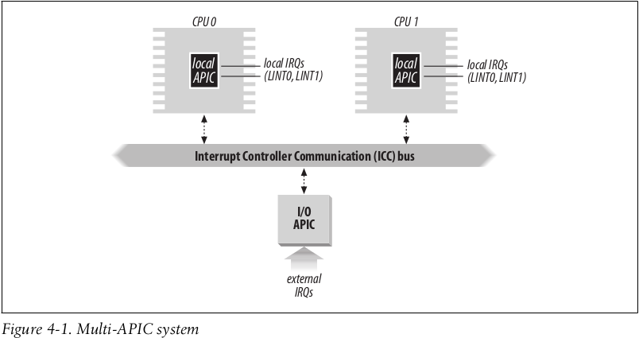
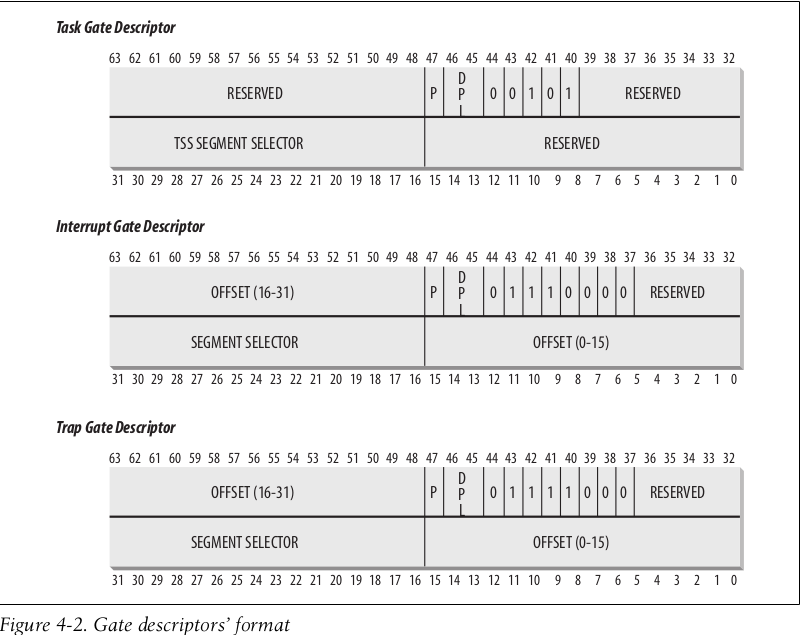
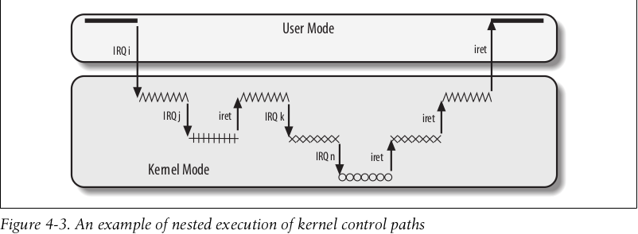
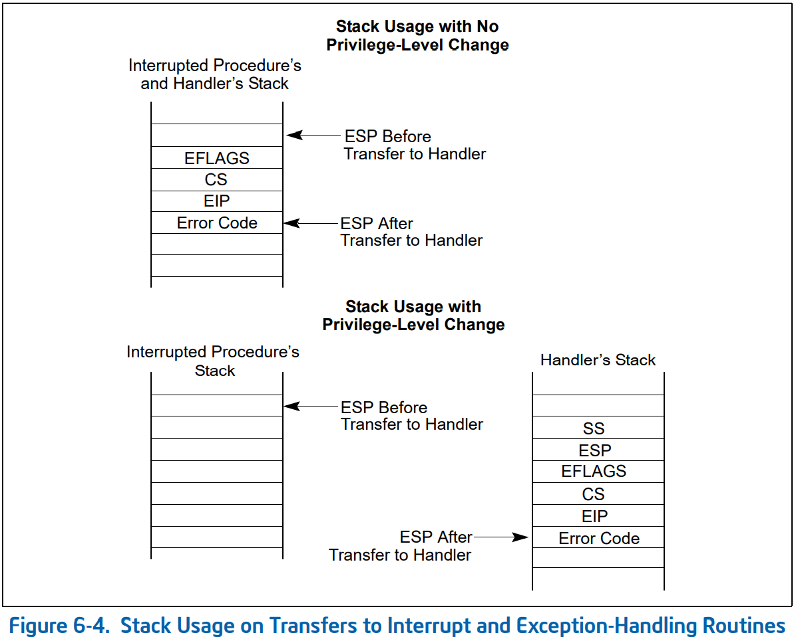
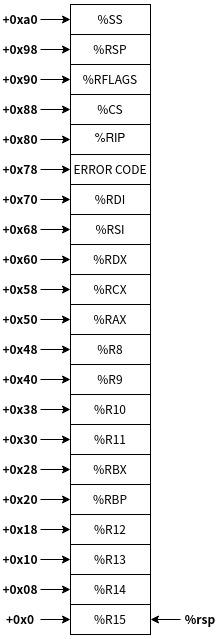
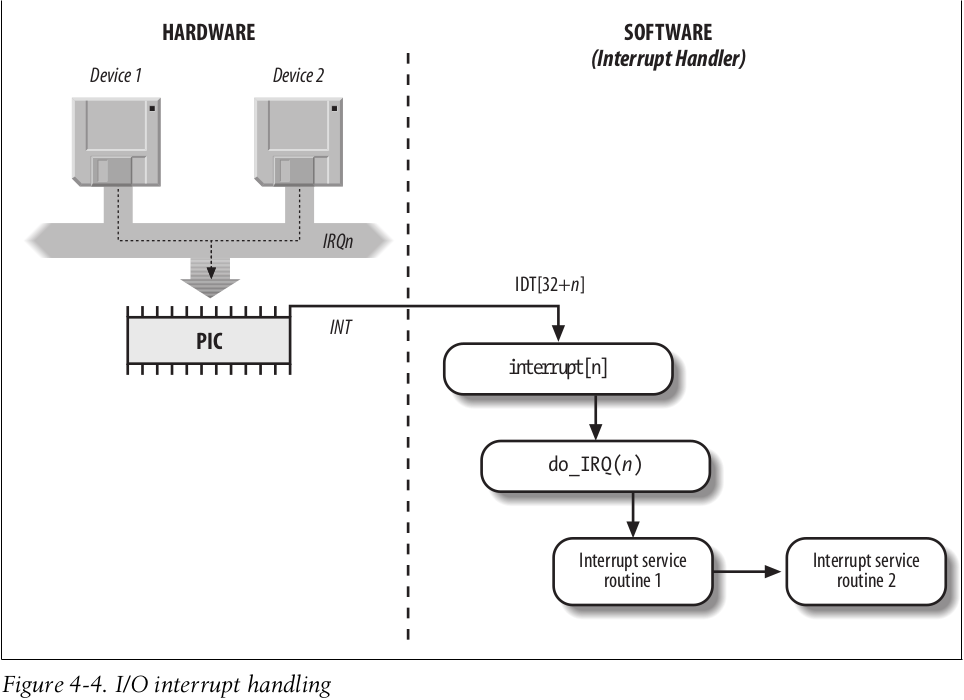
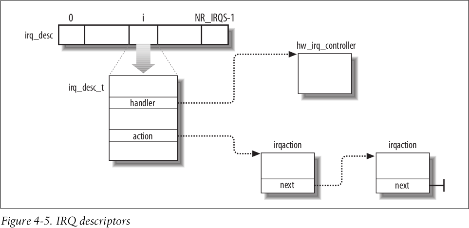

linux内核学习-六
前言
这部分介绍一下Linux内核的中断机制
中断通常被定义为由CPU芯片内外部硬件电路产生，可以改变处理器执行顺序的一个事件。
中断通常可以分为同步中断(synchronous)和异步中断(asynchronous)
- 同步中断是当指令执行时，由CPU控制单元在一条指令终止执行后产生的。在Intel手册中又被称为异常(exception)
- 异步中断是由其他硬件设备，依照CPU时钟信号随机产生的。在Intel手册中又被称为中断(interrupt)
一般来说，异常是由程序的错误或内核必须处理的异常条件产生的，诸如除0错误或缺页异常。而中断则由间隔定时器或I/O设备产生
中断和异常
每个中断和异常，是由一个$0~255$之间的无符号数字来标识，Intel将该8位无符号整数称为一个向量(vector)
中断
IRQ和PIC
每个能够发出中断请求的硬件设备控制器，都有一条名为IRQ(Interrupt Request)的输出线。而所有的IRQ线都与一个名为可编程中断控制器(Programmable Interrupt Controller)的硬件电路的输入引脚相连
PIC会执行如下动作
- 监视IRQ线，检查产生的信号。如果有多条IRQ线产生信号，则选择引脚编号较小的IRQ线
- 如果一个引发信号出现在IRQ线上
- 把接收到的引发信号转换为对应的向量
- 把该向量存放在PIC的一个I/O端口，从而允许CPU通过数据总线读该向量
- 把引发信号发送到处理器的INTR引脚，即产生一个中断
- 等待，直到CPU把该中断信号写到PIC的一个I/O端口上，然后清除INTR引脚
- 返回到第1步
I/O APIC
I/O APIC硬件的基本结构如下图所示

每个CPU都含有一个本地APIC，而每个本地APIC都有32位的寄存器、一个内部时钟、一个本地定时设备及为本地APIC中断保留的两条额外的IRQ线LINT0和LINT1。所有的本地APIC都连接到一个外部的I/O APIC，形成一个多APIC的系统
异常
内核必须为每种异常提供一个专门的异常处理程序
对于某些异常，CPU控制单元在开始执行异常处理程序前，会产生一个硬件出错码(hardward error code)，并且压入内核态堆栈
中段描述符表
中段描述符表(Interrupt Descriptor Table, IDT)，其与每一个中断或异常向量相联系，每一个向量在表中有相应的中断或异常处理程序的入口地址
idtr寄存器存储IDT的线性基地址以及其限制，类似于前面介绍的gdt
IDT包含三种类型的描述符，每种描述符的64位含义如下图所示

各个类型的中段描述符的含义如下
- 任务门
当中断信号发生时，必须取代当前进程的那个进程的TSS选择符存放在任务门中 - 中断门
包含段选择符和中断或异常处理程序的段内偏移量。当控制权转移到一个适当的段时，处理器清IF标志，从而关闭将来会发生的可屏蔽中断 - 陷阱门
与中断门相似，只是控制权传递到一个适当的段时，处理器不修改IF标志
中断和异常的硬件处理
在处理下一条指令前，控制单元会检查在运行前一条指令时，是否已经发生了一个中断或异常。其会执行下列操作
- 确定与中断或异常关联的向量i($0 \leq i \leq 255$)
- 读取idtr寄存器指向的idt表中的第i项
- 从gdtr寄存器获取gdt的基地址，并获取对应的IDT表项中的段描述符
- 验证中断的合法性。比较当前特权级CPL和段描述符(gdt)的DPL；再比较当前特权级CPL和门描述符(idt)的DPL
- 切换到与DPL相同的特权级的栈
- 读tr寄存器，从而访问运行进程的TSS段
- 保存ss和rsp
- 用于新特权级相关的栈段和栈指针装载ss和rsp寄存器
- 若异常发生，用引起异常的指令地址装载cs和rsp寄存器，从而重新执行该指令
- 在栈中保存eflags、cs和rip内容
- 如果异常产生了一个硬件出错码，则将其保存在栈中
- 装载cs和rip寄存器，其值分别为idt表的第i项门描述符的段选择符和段偏移
当中断或异常处理完后，相应的处理程序产生一条iret指令，其会执行下列操作
- 用保存在栈中的值装载cs、rip和eflags寄存器。如果有硬件出错码，则在执行iret指令前先弹出硬件出错码
- 检查处理程序的CPL是否等于当前特权级。如果不相等，则继续下面的步骤
- 从栈中装载ss和rsp
- 检查ds、es、fs和gs段寄存器的内容。清除DPL(各个段)小于当前CPL的段寄存器
中断和异常处理程序的嵌套执行
内核态的执行序列可以进行任意嵌套——即一个中断处理程序可以被另一个中断处理程序”中断”，如下图所示

这里稍微说一下，允许内核执行序列嵌套的要求是中断处理程序运行期间，不发生进程切换——因为部分内核的中断处理程序使用独立的中断请求栈，其没有对应的进程，无法成功完成进程切换
初始化中断描述符表
int指令允许用户态进程发出一个中断信号，其值可以是0~255的任意一个向量。
为了避免用户通过int指令模拟非法的中断和异常，可以通过把中断门描述符或陷阱门描述符的DPL字段设置为0来实现；而对于用户态进程可以触发的中断或异常，将中断门描述符或陷阱门描述符的DPL字段设置为3即可
中断门、陷阱门和系统门
Linux内核使用的门描述符与Intel的稍有不同，如下所示
| 门描述符类型 | 描述 |
|---|---|
| 中断门 | 用户态的进程不能访问的一个Intel中断门(门的DPL字段为0) 所有的Linux中断处理程序都通过中断门激活，并全部限制在内核态 |
| 系统门 | 用户态的进程可以访问的一个Intel陷阱门(门的DPL字段为3) 通过系统门来激活三个Linux异常处理程序，其向量为4,5和128 |
| 系统中断门 | 能够被用户态进程访问的Intel中断门(门的DPL字段为3) 与向量3相关的异常处理程序由该门激活 |
| 陷阱门 | 用户态的进程不能访问的一个Intel陷阱门(门的DPL字段为0) 大部分Linux异常处理程序通过陷阱门激活 |
| 任务门 | 用户态进程不能访问的一个Intel任务门(门的DPL字段为0) “Double Fault”异常的处理通过任务门激活 |
idt初始化
当计算机运行在实模式时，idt被初步初始化。当Linux内核接管执行后，idt被转移到RAM的另一个区域，并进行二次初始化
这里额外说明一下，Linux源代码中包含Documentation目录，里面着实包含了许多对于源代码的分析和讲解
通过Documentation\x86\entry_64.rst可以知道，Linux内核通过arch/x86/kernel/idt.c数组和arch/x86/include/asm/idtentry.h中的宏，对idt进行初始化
Linux内核使用arch/x86/kernel/idt.c的诸如def_idts等数组，初始化系统的idt
而数组中元素指定的handler地址，是通过DECLARE_IDTENTRY汇编下宏，在arch/x86/include/asm/idtentry.h声明的。其首先执行arch/x86/entry/entry_64.S中共同汇编部分，然后执行通过DECLARE_IDTENTRY非汇编下宏声明在arch/x86/include/asm/idtentry.h的函数，而该函数实际上通过DEFINE_IDTENTRY宏定义在arch/x86/kernel/traps.c中具体的C语言部分代码
其调用层级如下所示1
2
3
4asm_$name
idtentry
$name
__$name
中断和异常处理
异常处理
异常处理程序有一个标准的结构，由以下几部分组成
- 在内核堆栈中保存大部分寄存器的内容(该部分使用汇编语言实现)
- 用高级的C函数处理异常
- 通过ret_from_exception函数从异常处理程序退出
为异常处理程序保存寄存器的值
根据intel手册的，在处理异常前，硬件会提前进行相关的处理，如下图所示

在硬件自动执行完上述过程后，其会根据异常向量，从idt中找到已经设置好的handler。idt中设置的handler位于arch/x86/kernel/idt.c。可以看到，handler都是以asm_为前缀的符号，其通过DECLARE_IDTENTRY宏声明在arch/x86/include/asm/idtentry.h。而其最终包装的是位于arch/x86/entry/entry_64.S的idtentry宏
这里给出化简后的基本逻辑1
2
3
4
5
6
7
8
9
10
11
12
13
14
15
16
17
18
19
20
21
22
23
24
25
26
27
28
29
30
31
32
33 .if \has_error_code == 0
pushq $-1 /* ORIG_RAX: no syscall to restart */
.endif
cld
PUSH_AND_CLEAR_REGS save_ret=1
/*
* We entered from user mode or we're pretending to have entered
* from user mode due to an IRET fault.
*/
SWAPGS
/* We have user CR3. Change to kernel CR3. */
SWITCH_TO_KERNEL_CR3 scratch_reg=%rax
.Lerror_entry_from_usermode_after_swapgs:
/* Put us onto the real thread stack. */
popq %r12 /* save return addr in %12 */
movq %rsp, %rdi /* arg0 = pt_regs pointer */
call sync_regs
movq %rax, %rsp /* switch stack */
pushq %r12
RET
movq %rsp, %rdi /* pt_regs pointer into 1st argument*/
.if \has_error_code == 1
movq ORIG_RAX(%rsp), %rsi /* get error code into 2nd argument*/
movq $-1, ORIG_RAX(%rsp) /* no syscall to restart */
.endif
call \cfunc
jmp error_return
其中，PUSH_AND_CLEAR_REGS和SWITCH_TO_KERNEL_CR3函数都位于arch/x86/entry/calling.h 。其大体思路就是切换特权级，保存相关的寄存器，并切换栈即可(忽略其他情况)。
这里需要特别说明的是，Intel硬件切换的是位于TSS的trampoline堆栈，而非Linux进程的内核态堆栈，该栈是每个CPU上进程共享的。其通过sync_regs函数，切换到TSS中实际的进程的内核态堆栈
最终的栈布局如下所示

进入和离开异常处理程序
当异常处理程序保存完寄存器的值后，其会调用位于arch/x86/kernel/traps.c，使用DEFINE_IDTENTRY宏包装的C函数。
不同的异常使用相似的处理模板，化简后的逻辑如下所示1
2
3
4
5
6
7
8
9
10
11
12
13
14
15
16/*
* We want error_code and trap_nr set for userspace faults and
* kernelspace faults which result in die(), but not
* kernelspace faults which are fixed up. die() gives the
* process no chance to handler the signal and notice the
* kernel fault information, so that won't result in polluting
* the information about previously queued, but not yet
* delivered, faults. See also exc_general_protection below.
*/
current->thread.error_code = error_code;
current->thread.trap_nr = trapnr;
if (!sicode)
force_sig(signr);
else
force_sig_fault(signr, sicode, addr);
其基本思路就是向当前进程发送合适的信号
根据上一节的汇编代码，其会跳转到error_return标签，从而完成中断返回
中断处理
中断处理依赖于中断类型，主要有如下三种形式
- I/O中断
相应的中断处理程序必须查询设备，以确定适当的操作过程 - 时钟中断
某种时钟(或者是一个本地APIC时钟，或者是一个外部时钟)产生的中断 - 处理器间中断
多处理器系统中一个CPU对另外一个CPU发出一个中断
I/O中断处理
由于几个设备可能共享一个IRQ线，则要求I/O中断处理程序可以灵活的给多个设备同时提供服务。
所有的I/O中断处理程序，都会执行下述四个相同的基本操作
- 在内核态堆栈中保存IRQ的值和寄存器的内容
- 为正在给IRQ线服务的PIC发送一个应答，从而允许PIC进一步发出中断
- 执行共享该IRQ的所有设备的中断服务例程(Interrupt Service Routine)
- 跳转到ret_from_intr的地址，终止执行
其I/O中断处理的示意图如下所示

Intel将32~238范围的中断向量，保留给I/O中断。Linux内核使用arch/x86/kernel/idt.c的void __init idt_setup_apic_and_irq_gates(void)，来初始化相相关的idt。而这些I/O中断的handler，通过位于arch/x86/include/asm/idtentry.h的irq_entries_start代码进行定义，其调用使用DECLARE_IDTENTRY汇编宏声明在arch/x86/include/asm/idtentry.h的函数。其执行arch/x86/entry/entry_64.S函数，调用通过DECLARE_IDTENTRY非汇编宏声明在arch/x86/include/asm/idtentry.h的函数，实际上包装的是通过DEFINE_IDTENTRY_IRQ宏定义在arch/x86/kernel/irq.c
struct irq_desc
根据前面的介绍，一个IRQ线，可能由多个设备共享。也就是一个中断向量，可能需要对应多个中断服务例程。Linux内核使用位于include/linux/irqdesc.h的struct irq_desc，来描述一个中断向量对应的相关信息。其关键字段如下所示
| 类型 | 字段名称 | 描述 |
|---|---|---|
| struct irq_data | irq_data | 指向PIC方法所使用的相关数据 |
| struct irqaction * | action | 标识当出现IRQ时，要调用的中断服务例程链表 |
| unsigned int | status_use_accessors | 描述IRQ线状态的一组标识 |
| unsigned int | depth | 描述IRQ线的嵌套深度 |
所有的描述符在一起形成位于kernel/irq/irqdesc.c的irq_desc数组，相关的关系如下所示

struct irqaction
Linux内核使用位于include/linux/interrupt.h的struct irqaction，来具体描述一个中断服务例程。每一个描述符涉及一个特定的硬件设备和一个特定的中断。其关键的字段如下所示
| 类型 | 字段名称 | 描述 |
|---|---|---|
| irq_handler_t | handler | 指向一个I/O设备的中断服务例程 |
| unsigned int | flags | 描述IRQ与I/O设备之间的关系 |
| const char * | name | I/O设备名称 |
| void * | dev_id | I/O设备的私有字段 典型情况下，其标识I/O设备本身 |
| unsigned int | irq | IRQ线 |
| struct irqaction * | next | 指向irqaction描述符链表的下一个元素 |
为中断处理程序保存寄存器的值
根据位于arch/x86/entry/entry_64.S的idtentry_irq宏可知，这部分处理与前面的异常处理程序保存寄存器的值逻辑是基本一样的，除了最后会调用DEFINE_IDTENTRY_IRQ(common_interrupt)函数
中断处理例程
根据前面的分析，Linux内核使用位于arch/x86/kernel/irq.c的DEFINE_IDTENTRY_IRQ(common_interrupt)函数，处理I/O中断。化简后的逻辑如下所示1
2
3
4
5
6DEFINE_IDTENTRY_IRQ(common_interrupt)
{
struct irq_desc *desc;
desc = __this_cpu_read(vector_irq[vector]);
desc->handle_irq(desc);
}
其大体思路就是根据传入的中断向量，找到对应的irq_desc结构体，并调用其handle_irq字段
一般的，handle_irq字段会遍历并执行irq_desc结构体的irqaction链。
从中断和异常返回
根据前面的伪代码，Linux内核使用位于arch/x86/entry/entry_64.S的符号error_return，完成中断和异常的返回。其化简后的逻辑如下所示1
2
3
4
5
6
7
8
9
10
11
12
13
14
15
16
17
18
19
20
21
22
23
24
25
26
27
28
29
30
31
32
33
34
35
36
37
38
39
40
41
42
43
44
45
46
47
48 testb $3, CS(%rsp)
jz restore_regs_and_return_to_kernel
jmp swapgs_restore_regs_and_return_to_usermode
SYM_INNER_LABEL(swapgs_restore_regs_and_return_to_usermode, SYM_L_GLOBAL)
/* Assert that pt_regs indicates user mode. */
testb $3, CS(%rsp)
jnz 1f
ud2
1:
ALTERNATIVE "", "jmp xenpv_restore_regs_and_return_to_usermode", X86_FEATURE_XENPV
POP_REGS pop_rdi=0
/*
* The stack is now user RDI, orig_ax, RIP, CS, EFLAGS, RSP, SS.
* Save old stack pointer and switch to trampoline stack.
*/
movq %rsp, %rdi
movq PER_CPU_VAR(cpu_tss_rw + TSS_sp0), %rsp
UNWIND_HINT_EMPTY
/* Copy the IRET frame to the trampoline stack. */
pushq 6*8(%rdi) /* SS */
pushq 5*8(%rdi) /* RSP */
pushq 4*8(%rdi) /* EFLAGS */
pushq 3*8(%rdi) /* CS */
pushq 2*8(%rdi) /* RIP */
/* Push user RDI on the trampoline stack. */
pushq (%rdi)
/*
* We are on the trampoline stack. All regs except RDI are live.
* We can do future final exit work right here.
*/
STACKLEAK_ERASE_NOCLOBBER
SWITCH_TO_USER_CR3_STACK scratch_reg=%rdi
/* Restore RDI. */
popq %rdi
SWAPGS
INTERRUPT_RETURN
其中，POP_REGS和SWITCH_TO_USER_CR3_STACK函数都位于arch/x86/entry/calling.h。其大体思路就是恢复部分上下文，切换到前面介绍的trampoline堆栈，然后迁移IRET的frame，从而在trampoline堆栈上执行iret指令